@if (loading()) {
}
@else if(error()){
Ocurrio un error
}
@else if (!loading() && filteredList().length == 0) {
}
@else {
@for (todo of filteredList(); track $index) {
@if (searchValue() == '' || todo.task.toLowerCase().includes(searchValue().toLowerCase())) {
}
}
}
@if (showCreateTodo()) {
}
@if(showFilter()){
}